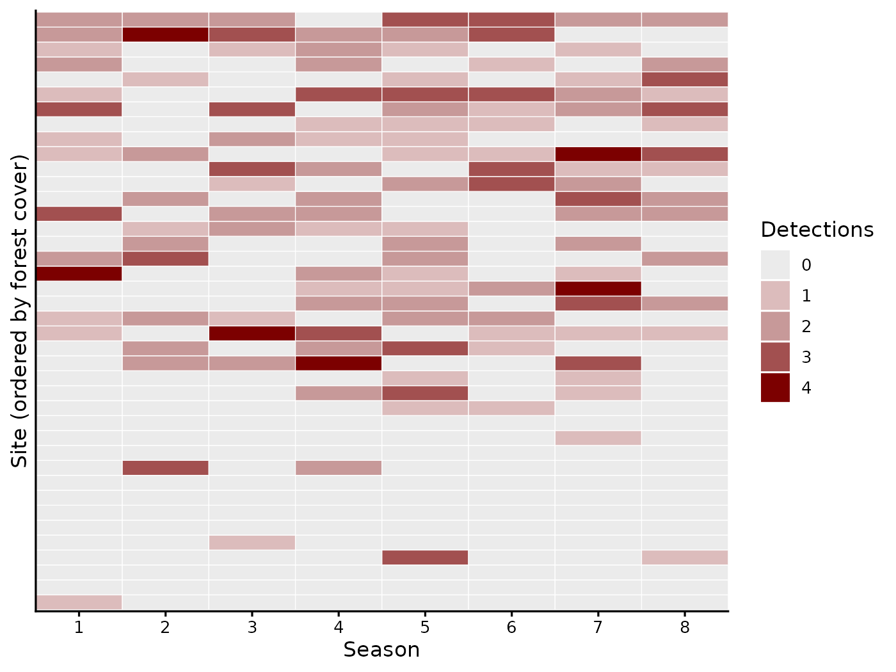
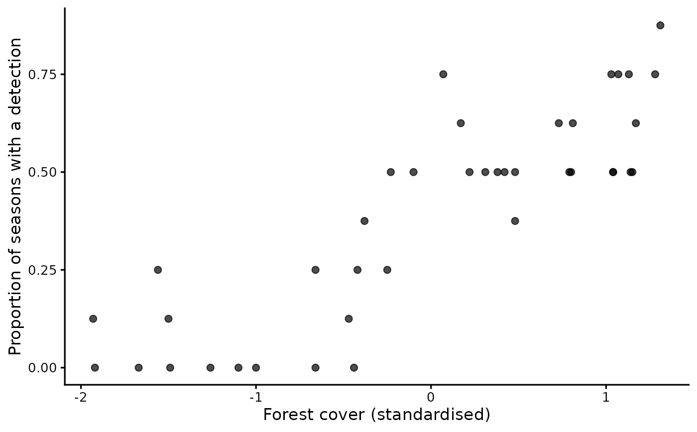
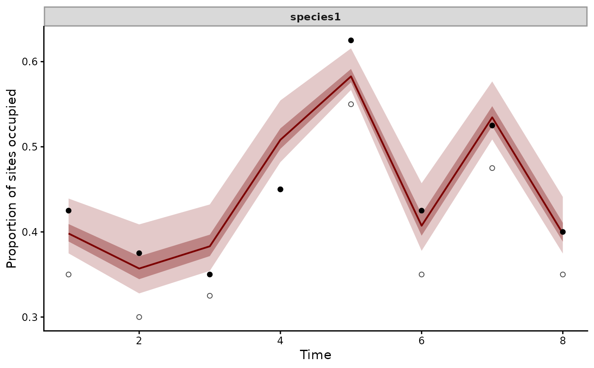
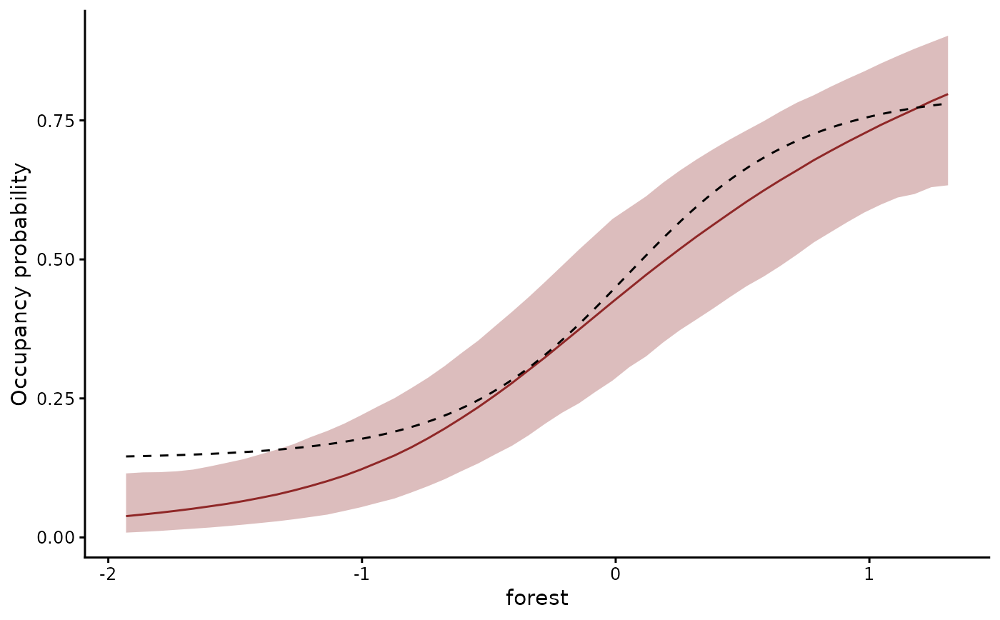
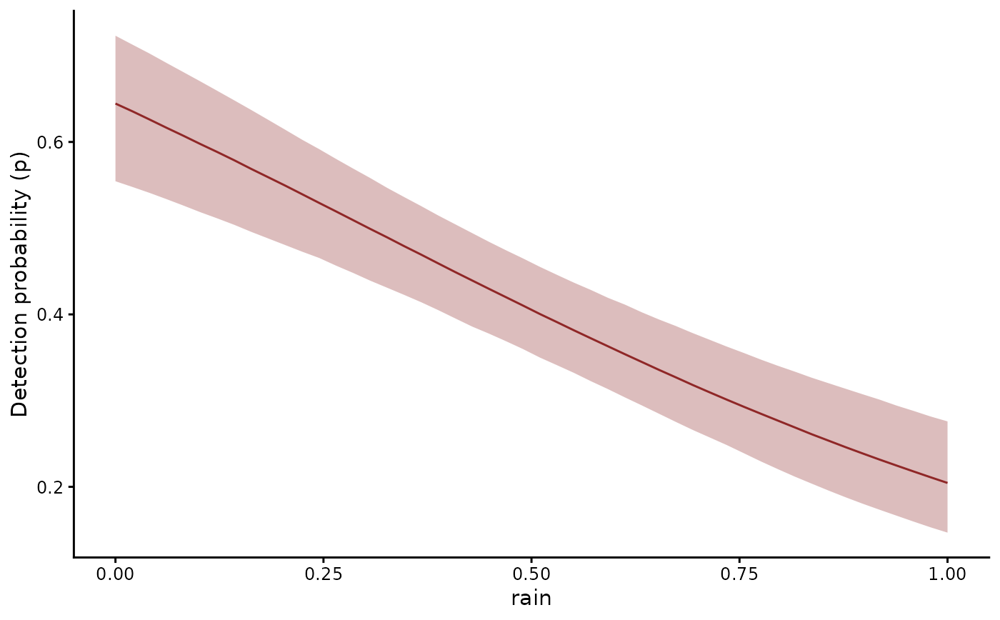
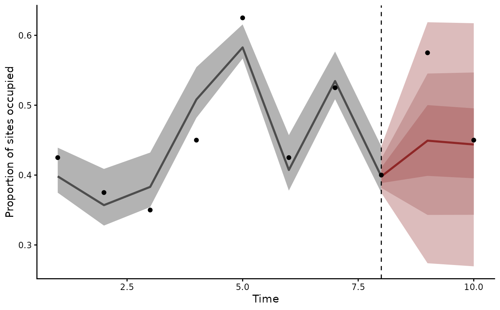
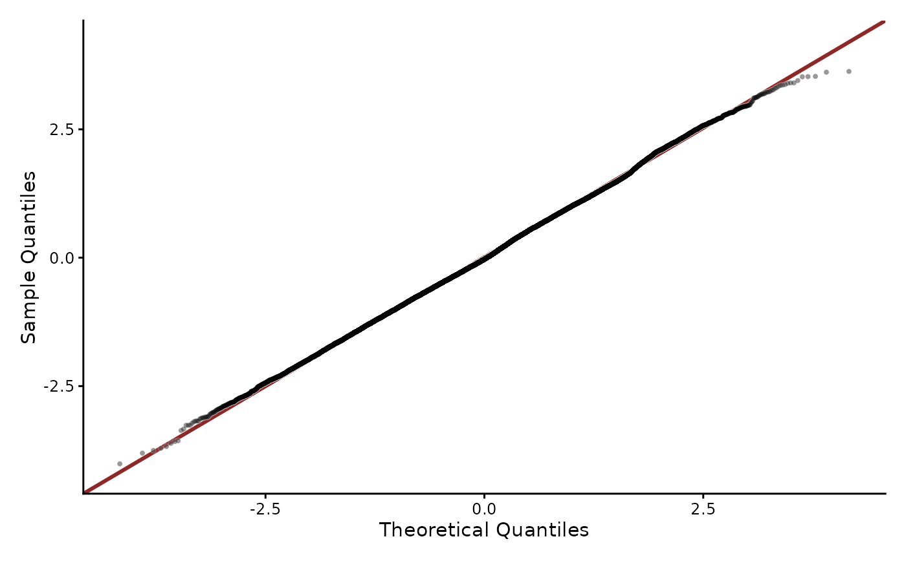

Occupancy models with mvgam
Nicholas J Clark
2026-11-26
Source:vignettes/articles/occupancy.Rmd
occupancy.RmdThe purpose of this article is to show how mvgam can be
used to fit and interrogate multi-season occupancy models for species
that are detected imperfectly.
Occupancy models
An occupancy model is a standard part of the ecological modeller’s toolkit for making inferences about where a species occurs when our surveys can miss it (MacKenzie et al. 2002). Briefly, assume records whether the species was detected (1) or not (0) at site on replicate visit in season . If the visits within a season are close enough together to satisfy the assumption that each site’s status remained closed (i.e. the species did not colonise or abandon the site between visits), we can account for the fact that a non-detection does not always mean the species is absent. This is done by assuming the detections are Bernoulli random variables that depend on the true “latent” occupancy status and a detection probability :
Using a set of linear predictors, we can estimate effects of covariates on the probability of occupancy (with a logit link) and, jointly, effects of possibly different covariates on detection probability (also with a logit link). In the example below, occupancy depends on a smooth function of forest cover and on a latent AR(1) process that all sites share. Detection depends on how much rain fell during each visit:
mvgam can handle this type of model because it is
designed to propagate unobserved temporal processes that evolve
independently of the observation process. An occupancy model fits this
State-Space format well, as it can be thought of as a State-Space model
whose latent state is the binary “true” occupancy status of each site.
This is very convenient. We can incorporate any of the package’s diverse
effect types (i.e. multidimensional splines, time-varying effects,
random effects etc…) into either linear predictor, while the latent
process links the seasons together and lets us forecast occupancy into
seasons that have not yet been surveyed. All that is required is a
marginalization trick that sums the likelihood over both possible values
of
,
leaving Stan’s samplers to deal only with continuous
parameters (see more about this in the Stan User’s Guide
chapter on latent
discrete parameters).
Simulating multi-season detection data
First we will simulate detection / non-detection data for a single species surveyed at 40 sites over ten seasons, with four replicate visits per season. Occupancy probability increases with forest cover but levels off at the most forested sites. A regional AR(1) process causes occupancy at all sites to rise and fall together from one season to the next, as we might expect if the species responds to good and bad years across the region. Detection probability declines with the amount of rain recorded on each visit:
set.seed(42)
n_site <- 40
n_season <- 10
n_visit <- 4
# Forest cover of each site, with mean 0 and SD 1
forest <- round(as.numeric(scale(runif(n_site))), 2)
# Regional AR(1) deviations in logit occupancy, shared by every site
z <- numeric(n_season)
z[1] <- rnorm(1, 0, 0.6)
for (t in 2:n_season) z[t] <- 0.7 * z[t - 1] + rnorm(1, 0, 0.45)
# Occupancy rises with forest cover and levels off
f_forest <- function(x) 1.6 * tanh(1.2 * x)
psi <- plogis(outer(f_forest(forest), z, "+") - 0.2)
occupied <- matrix(rbinom(length(psi), 1, psi), n_site, n_season)
# One row per visit, with rain recorded on each
dat <- expand.grid(visit = seq_len(n_visit), time = seq_len(n_season),
site = seq_len(n_site))
dat$series <- factor("species1")
dat$site <- factor(dat$site)
dat$forest <- forest[as.integer(dat$site)]
dat$rain <- round(runif(nrow(dat)), 2)
dat$occupied <- occupied[cbind(as.integer(dat$site), dat$time)]
# An occupied site is detected with probability p, which falls with
# rain. An empty site is never detected.
p <- plogis(0.5 - 2 * dat$rain)
dat$y <- rbinom(nrow(dat), 1, dat$occupied * p)Preview the dataset to get an idea of how it is structured:
head(dat)
#> visit time site series forest rain occupied y
#> 1 1 1 1 species1 1.07 0.39 1 1
#> 2 2 1 1 species1 1.07 0.08 1 1
#> 3 3 1 1 species1 1.07 0.83 1 0
#> 4 4 1 1 species1 1.07 0.07 1 1
#> 5 1 2 1 species1 1.07 0.11 0 0
#> 6 2 2 1 species1 1.07 0.64 0 0Each row is one visit. series identifies the species,
site the site and time the season. The
occupied column holds the true simulated occupancy status,
which we will use to check our estimates (the model never sees it). This
long format differs from the multidimensional detection arrays that are
commonly used to fit occupancy models in other software, but
pivot_detection_array() can convert those arrays for you.
Next we split the data into training and testing sets, holding out the
last two seasons to evaluate forecasts:
It is always worth plotting the detection histories before fitting anything. Here we sum the detections at each site in each training season and order the sites by their forest cover:
histories <- aggregate(y ~ site + time + forest, data = train, FUN = sum)
histories$site <- reorder(histories$site, histories$forest)
ggplot(histories, aes(x = time, y = site, fill = factor(y))) +
geom_tile(colour = "white") +
scale_fill_manual(
values = c("grey92", "#DCBCBC", "#C79999", "#A25050", "#7C0000"),
name = "Detections"
) +
scale_x_continuous(breaks = 1:8, expand = c(0, 0)) +
labs(x = "Season", y = "Site (ordered by forest cover)") +
theme(axis.text.y = element_blank(), axis.ticks.y = element_blank())
Number of detections from four visits at each site in each training season. Sites are ordered by forest cover, with the most forested sites at the top.
Detections are concentrated at the more forested sites. Some seasons (such as season 5) also produced detections at many more sites than others. Notice how rarely an occupied site produces detections on all four visits. Some of the grey cells will be sites where the species was present but missed on every visit. We can see the forest cover relationship more directly by plotting the proportion of seasons in which each site produced at least one detection:
seen <- aggregate(y ~ site + forest + time, data = train, FUN = max)
by_site <- aggregate(y ~ site + forest, data = seen, FUN = mean)
ggplot(by_site, aes(x = forest, y = y)) +
geom_point(size = 2, alpha = 0.7) +
labs(x = "Forest cover (standardised)",
y = "Proportion of seasons with a detection")
Proportion of training seasons with at least one detection at each site, against standardised forest cover.
This relationship looks nonlinear, with few detections at the least forested sites and a plateau at the most forested ones. But these raw proportions mix occupancy with detection. Imperfect detection pulls them below the true occupancy probabilities. Separating these two processes is exactly what the occupancy model is for.
Modelling with the occ() family
Now we are ready to fit a model using mvgam(). Occupancy
and detection each get their own formula inside bf(). The
first formula sets up the linear predictor for occupancy on the logit
scale, while the second (p ~) sets up the linear predictor
for detection probability. trend_formula = ~ AR() adds the
regional AR(1) process to logit occupancy. Setting
multi_season = TRUE in occ() tells
mvgam that each combination of site and season is its own
closure unit (i.e. occupancy can change between seasons but not between
visits within a season):
mod <- mvgam(
bf(y ~ s(forest, k = 5), p ~ rain),
trend_formula = ~ AR(),
data = train,
newdata = test,
family = occ(multi_season = TRUE),
chains = 4, seed = 42, silent = 2
)The posterior summary separates parameters that belong to the observation model from those that belong to the latent AR(1) process:
summary(mod)
#> Family: occ
#> Links: mu = logit; p = logit
#> Formula: y ~ s(forest, k = 5)
#> p ~ rain
#> Data: train (Number of observations: 1280)
#> Trends: AR(1)
#> Draws: 4 chains, each with iter = 2000; warmup = 1000; thin = 1;
#> total post-warmup draws = 4000
#>
#> == Observation Model ==
#> Smoothing Spline Hyperparameters:
#> Estimate Est.Error l-95% CI u-95% CI Rhat Bulk_ESS Tail_ESS
#> sds(sforest_1) 2.04 1.75 0.07 6.68 1.00 1337 908
#>
#> Regression Coefficients:
#> Estimate Est.Error l-95% CI u-95% CI Rhat Bulk_ESS Tail_ESS
#> Intercept -0.42 0.28 -0.99 0.09 1.00 1412 1312
#> p_Intercept 0.60 0.19 0.22 0.96 1.00 4286 2731
#> p_rain -1.96 0.32 -2.61 -1.34 1.00 3839 2969
#> sforest_1 8.86 3.62 0.38 14.92 1.00 1240 631
#>
#> == Trend Model ==
#> Trend Specific Parameters:
#> Estimate Est.Error l-95% CI u-95% CI Rhat Bulk_ESS
#> sigma_trend[species1] 0.38 0.17 0.14 0.78 1.00 1804
#> ar1_trend[species1] 0.06 0.40 -0.71 0.81 1.00 1566
#> Tail_ESS
#> sigma_trend[species1] 1925
#> ar1_trend[species1] 1378
#>
#> Draws were sampled using sampling(NUTS). For each parameter, Bulk_ESS
#> and Tail_ESS are effective sample size measures, and Rhat is the potential
#> scale reduction factor on split chains (at convergence, Rhat = 1).
#>
#> Next steps:
#> - `pp_check(fit, type = "fit_stat")`: goodness of fit of unit totals
#> - `plot(hindcast(fit, type = "latent_state"))`: posterior occupancy of each unit
#> - `forecast(fit, newdata = ...)`: out-of-sample forecasts
#> - `lfo_cv(fit)`: leave-future-out model comparison
#> - `conditional_effects(fit)`: covariate effects
#> Use `how_to_cite(fit)` for a methods paragraph and `methods_md(fit)` for its equations.The estimated effect of rain on detection (p_rain) is
-1.96 [-2.61, -1.34] on the logit scale, which is close to the true
simulated value of
.
Estimating the proportion of sites occupied
A common goal in occupancy modelling is to estimate how many sites
the species occupies, which will usually be more than the number of
sites where it happened to be detected (often called naive occupancy).
hindcast(type = "latent_state") returns posterior
probabilities that each site was occupied in each season, conditional on
the detections observed there. Its plot() method averages
these probabilities over sites to give the expected proportion of sites
occupied in each season. Here we add the true proportions (black points)
and naive occupancy (open circles) for comparison:
hc <- hindcast(mod, type = "latent_state")
units <- unique(train[, c("site", "time", "forest", "occupied")])
occ_true <- aggregate(occupied ~ time, data = units, FUN = mean)
detected <- aggregate(y ~ site + time, data = train, FUN = max)
occ_naive <- aggregate(y ~ time, data = detected, FUN = mean)
plot(hc) +
geom_point(data = occ_naive, aes(x = time, y = y), shape = 21,
fill = "white", colour = "grey30", size = 1.6) +
geom_point(data = occ_true, aes(x = time, y = occupied), size = 1.6) +
labs(y = "Proportion of sites occupied")
Expected proportion of sites occupied in each training season, with 50% and 95% credible intervals. Black points show the true proportion. Open circles show naive occupancy, the proportion of sites with at least one detection.
Naive occupancy underestimates the true proportion of occupied sites in 7 of the 8 training seasons. This happens because the species is fairly easy to miss: given the rain recorded on its visits, an occupied site has an average probability of 0.12 of going undetected on all four visits. The model accounts for these missed detections. Its estimates track the true proportions from season to season. The intervals show uncertainty in the expected proportion of sites occupied. Because the true proportion in any one season also depends on which of the undetected sites happen to be occupied, 3 of the 8 true values fall outside the 95% intervals.
Since a single detection confirms that a site is occupied, all of the
uncertainty in these estimates comes from sites where the species was
never detected. In the training data there are 194 combinations of site
and season with no detections. The species was present in 17 of them.
as.data.frame(hc) returns one row per site and season,
which makes it easy to inspect these directly. The model’s estimated
occupancy probability averages 0.20 at the sites that were occupied but
missed, compared to 0.07 at the sites that were empty. The forest cover
effect explains this difference, as the occupied but missed sites are
more heavily forested (average standardised forest cover of 0.72 vs
-0.47).
Habitat and detection effects
conditional_effects() supports the occupancy prediction
types. Using type = "latent_state" will plot the estimated
effect of forest cover on the probability of occupancy. Because the
result is a ggplot object, we can easily add the true
simulated function as a dashed line:
forest_grid <- data.frame(forest = seq(min(forest), max(forest),
length.out = 100))
forest_grid$psi <- plogis(f_forest(forest_grid$forest) - 0.2)
plot(conditional_effects(mod, effects = "forest", type = "latent_state"),
plot = FALSE)[[1]] +
geom_line(data = forest_grid, aes(x = forest, y = psi), linetype = 2)
Occupancy probability against standardised forest cover, with its 95% credible interval. The dashed line is the true simulated function.
The smooth has done a nice job of capturing the saturating effect of
forest cover, which increases occupancy steeply across the middle of the
forest gradient before levelling off at the most forested sites. Using
type = "detection" instead will plot the estimated effect
of rain on detection probability:
plot(conditional_effects(mod, effects = "rain", type = "detection"),
ask = FALSE)
Detection probability against the rain index, with its 95% credible interval.
Forecasting occupancy
Because the latent AR(1) process links the seasons together, we can
forecast occupancy into the two seasons we held out.
forecast(type = "latent_state") propagates the AR(1)
process forward, combines it with each site’s forest cover and averages
over sites to give the expected proportion of sites occupied in each
future season:
fc <- forecast(mod, type = "latent_state")
occ_true_all <- aggregate(
occupied ~ time, data = unique(dat[, c("site", "time", "occupied")]),
FUN = mean
)
plot(fc) +
geom_point(data = occ_true_all, aes(x = time, y = occupied),
size = 1.6) +
labs(y = "Proportion of sites occupied")
Expected proportion of sites occupied over the training seasons and the two held-out seasons. Points show the true proportion.
The forecast proportions of sites occupied are 0.45 [0.27, 0.62] and
0.44 [0.27, 0.62] for the two held-out seasons, compared to true
proportions of 0.57 and 0.45. The forecast intervals are much wider than
the hindcast intervals because no detections from these seasons enter
the model. If we instead want forecasts of the detections themselves,
the default forecast(mod) will produce these for each visit
in the held-out seasons. score() can then evaluate them
against the observed detections.
Checking the fit
pp_check(type = "fit_stat") computes the chi-squared
statistic of MacKenzie and Bailey (2004), which compares
the total detections at each site in each season against their
expectations. The same statistic is then computed on detections
simulated from the posterior. A Bayesian p-value near 0 would mean the
simulated detections rarely reach the discrepancy of the observed
ones:
fit_stat <- pp_check(mod, type = "fit_stat")
fit_stat
#> Posterior predictive check (closure-unit discrepancy)
#> Family: occ
#> Statistic: chi-squared
#> Aggregation: closure unit
#> Posterior draws: 500
#> Bayesian p-value: 0.508The value here, 0.51, gives no sign of lack of fit. We can also
inspect randomised quantile residuals, which mvgam computes
for each site in each season from its total detections:
plot(mod, type = "residuals")
Normal Q-Q plot of the randomised quantile residuals, one for each site in each season.
The residuals fall close to the line, giving us confidence that the model is capturing the main sources of variation in these detection histories.
Writing up the model
methods_md() writes out the fitted model as Markdown
with LaTeX equations, including the data dimensions, every linear
predictor, the priors and the call that produced it. This makes it easy
to drop a complete model description into a manuscript or
supplement:
methods_md(mod, heading_level = 3)Data
: per-visit binary detections (multi-season occupancy)
observations, series, time points, closure units, visits per unit (range 4-4)
Predictors:
- : continuous covariate
- : continuous covariate
Model
where:
- indexes series, indexes sites, indexes seasons
- indexes the visits to closure unit
- : latent occupancy state
- : occupancy probability, logit link
- : per-visit detection probability
- : population intercept
- : thin plate regression spline in , basis size , smoothing SD
- : population intercept of the predictor of
- : population effect of
- : latent state of series at time
- : process innovation, SD
- : autoregressive coefficient at lag
Implementation
Fitted with mvgam 2.0.0 (brms 2.23.2; Stan 2.40.0 via cmdstanr). Hamiltonian Monte Carlo: 4 chains, 1000 warmup + 1000 sampling iterations per chain.
mvgam(
formula = bf(y ~ s(forest, k = 5), p ~ rain),
trend_formula = ~AR(),
data = train,
family = occ(multi_season = TRUE),
backend = "cmdstanr",
chains = 4,
iter = 2000,
warmup = 1000
)how_to_cite() complements this with a methods paragraph
and the references for each component of the model.
Extending the model
Because both formulas are passed to brms, the occupancy
and detection linear predictors can include any of the effects that
brms and mgcv support. For example, we might
give each observer their own detection intercept, add a Gaussian process
over site coordinates to capture spatial variation in occupancy and
place a regularizing prior on the detection coefficients. Priors for the
detection predictor are identified with dpar = p:
mod_ext <- mvgam(
bf(y ~ s(forest, k = 5) + gp(x, y_coord, k = 10, c = 5 / 4),
p ~ rain + (1 | observer)),
trend_formula = ~ AR(),
data = train,
family = occ(multi_season = TRUE),
prior = prior(normal(0, 1), class = b, dpar = p)
)Here x and y_coord would hold the
coordinates of each site and observer would identify who
carried out each visit. get_prior() lists every parameter
whose prior can be changed in this way.
Further reading
Each function used here has a help page with more details, such as
?occ or ?hindcast.mvgam. The N-mixture models article shows how to estimate
abundance from repeated counts using the same data layout, while the Joint species distribution models article shows
how to share latent factors among many species. The following papers
offer useful material about occupancy models:
MacKenzie DI and Bailey LL (2004). Assessing the fit of site-occupancy models. Journal of Agricultural, Biological, and Environmental Statistics 9(3), 300-318. doi:10.1198/108571104X3361
MacKenzie DI, Nichols JD, Lachman GB, Droege S, Royle JA and Langtimm CA (2002). Estimating site occupancy rates when detection probabilities are less than one. Ecology 83(8), 2248-2255. doi:10.1890/0012-9658(2002)083[2248:ESORWD]2.0.CO;2